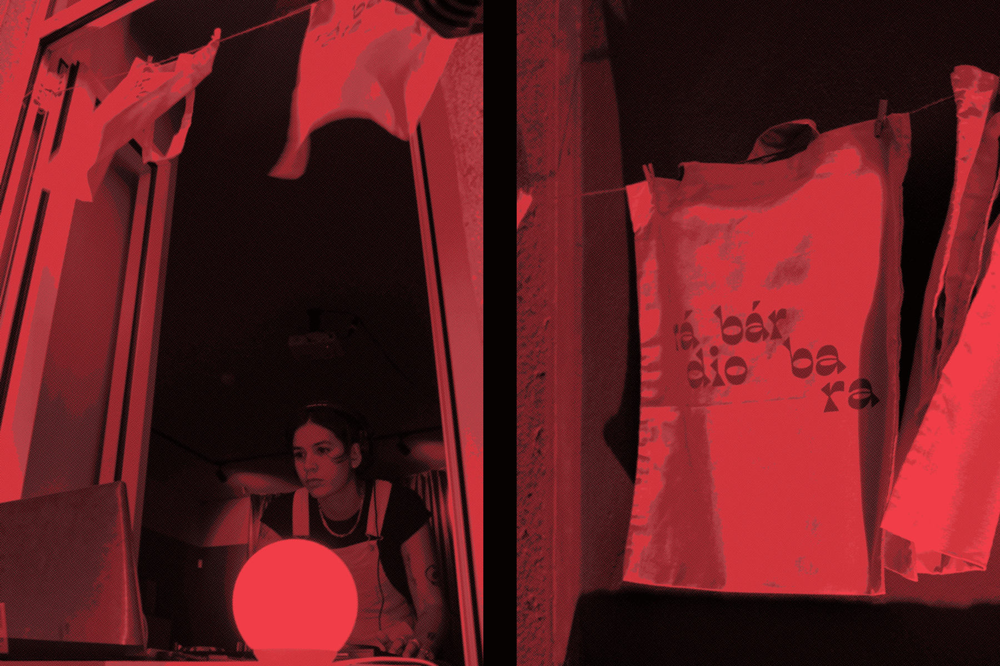
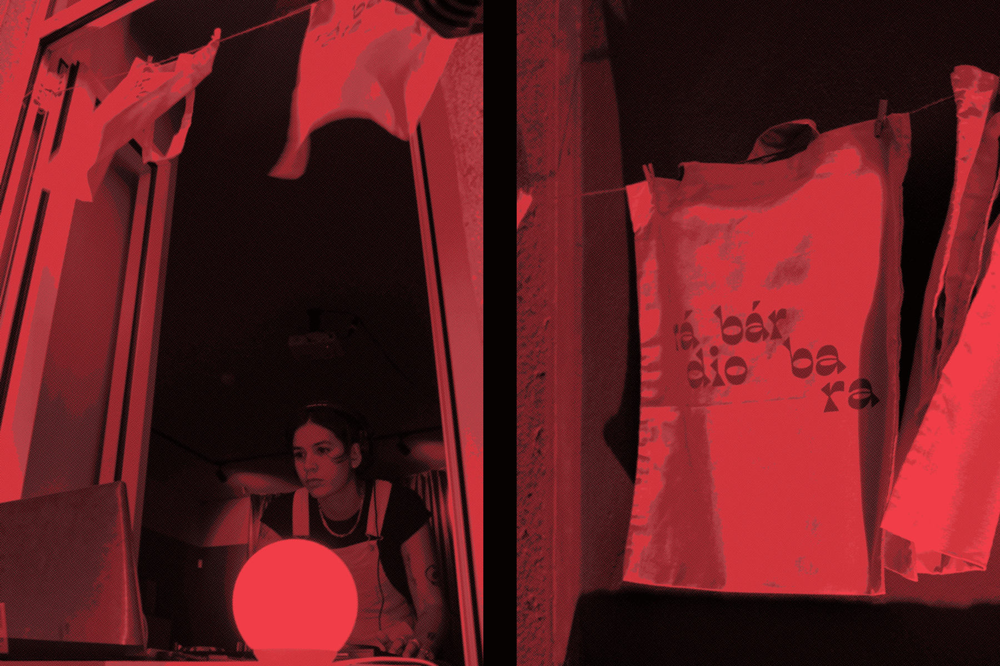
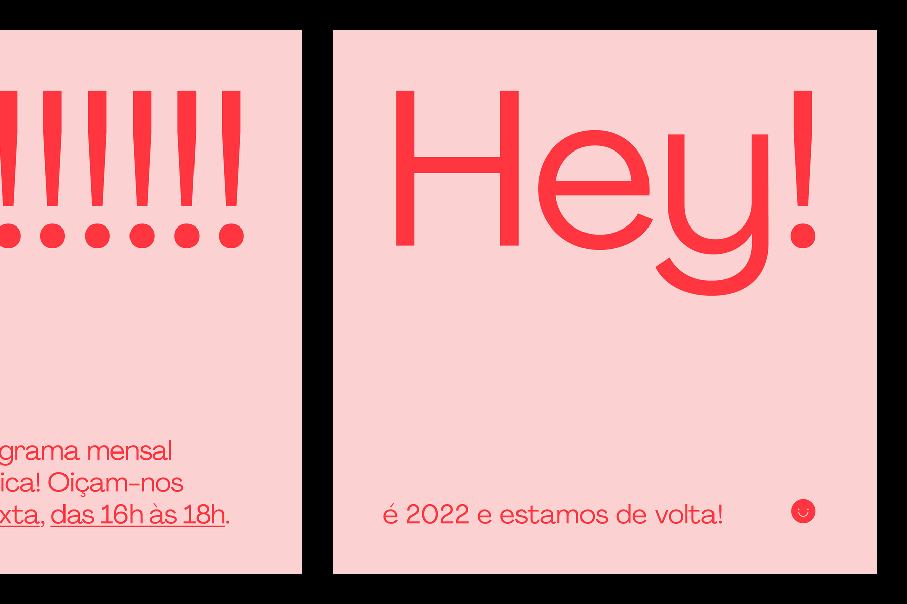
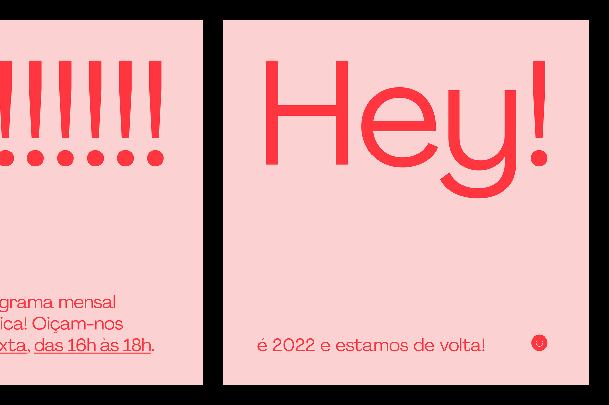

Rádio Bárbara
Rádio Bárbara is a Lisbon based music curation platform for women and LGBTQIA+ artists. It is politically and culturally active, showcasing projects, organizing events and promoting cultural initiatives in Lisbon. Rádio Bárbara is for everyone and hopes to enrich the ongoing portuguese queer and feminist movement. In association with Alexandra Tavares & Clara Mendes.
(2021 & 2022)
(2021 & 2022)
 

 
